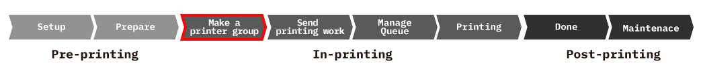
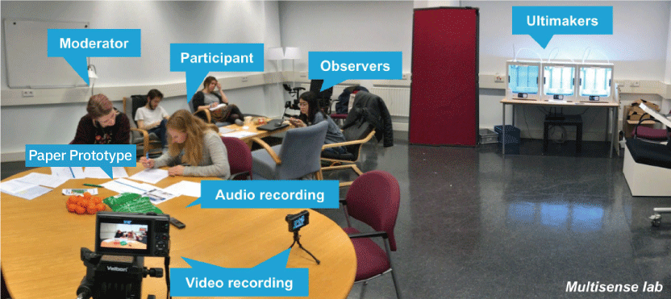
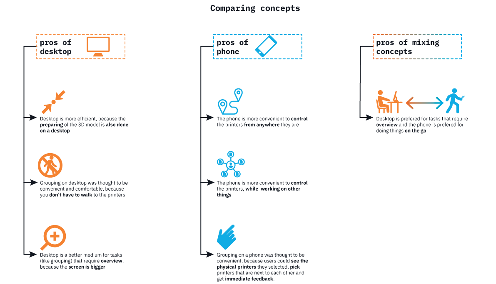

Initial Concept
We decided to design two concepts: one focused on a desktop interface and the other focused on a mobile phone interface. They mostly differ in ways of giving the operators a feeling of control. On the desktop, we assumed, they have more control, because they have more overview on a bigger screen. On the phone, we assumed, they have control because they will be able to change settings and abort a print whenever and wherever they are.
In order to efficiently develop the concept and gain more insight, we choose one essential part of printing process and develop prototype. This part is "seleting and grouping available 3D printers". This agile development enable us to quickly do concept test and iterate.

Concept#1 - Desktop


Interface

Scenario
"Group Overview" & "Printer Overview", these two main tabs are set for users fluently switch between production line and individual group. Additionally, an extra filter tab enable users to filter the list of printers based on the configurations they are looking for. The filter function can also be used when grouping the printers. The grouping is done by clicking "make new group"selecting the right printers and then clicking "group".
Concept#2 - Mobile


Interface

Scenario
The app is designed in such a way that you could use it to scan printers to group them, instead of having to select them on-screen. This way, users can physically see the printers they are grouping and the printers can give immediate feedback. Furthermore, the app could be used to get notifications of maintenance and/or faulty prints, so the operator can abort the print anywhere if necessary.
Comparative Concept Test
To compare two concepts and look for the gap between our understanding in context and our ideas, we conducted a comparative concept test. Via this test, we find out pros and cons of both concepts and explore essential design elements which are relevant to our proposed user experience.
Research Question
- What are the pros and cons of both concepts?
- How are they relavent to design goal: Efficiency and Feel of Control?
Test Method
We use paper prototype of interface and Ultimaker printers for this test. During test, we let participants to experience the context by explaining the storyboard and interact with the mock-up. Then, they were asked to perform a specific task: Create a printer group. In this process, we made video and audio recording for qualitative data, also, we user word clouds and System Usability scale for quantitative data.

Conclusion
In conclusion, participants prefer desktop model for its efficiency and clear overview. On the other hand, mobile interaction is preffered because participants can control printers anywhere and anytime, also they like seeing direct feedback of user impact from physicial printers.
